Atendimento humanizado
Consultas sem pressa, com escuta atenta e explicações claras sobre cada etapa do tratamento.
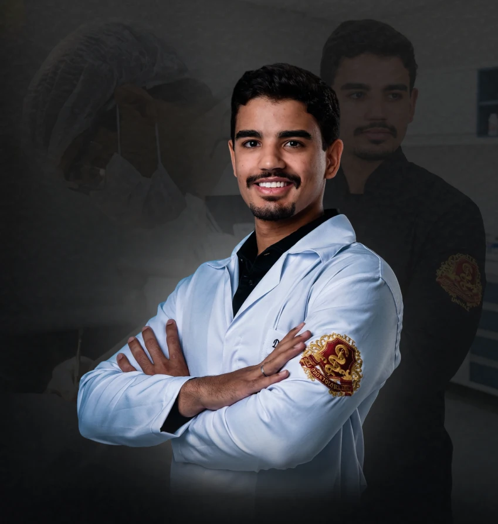
Limpeza, restaurações, canal, cirurgias, prótese e clareamento com profissionalismo e comprometimento. Agende sua consulta e recupere a alegria de sorrir.
Cada detalhe do atendimento foi pensado para que você se sinta seguro, confortável e confiante do início ao fim.
Consultas sem pressa, com escuta atenta e explicações claras sobre cada etapa do tratamento.
Seu tempo é respeitado: horários organizados para você não esperar na recepção.
Estética que respeita o formato do seu rosto e a sua personalidade: nada artificial.
Retornos programados e canal direto para tirar dúvidas depois do tratamento.
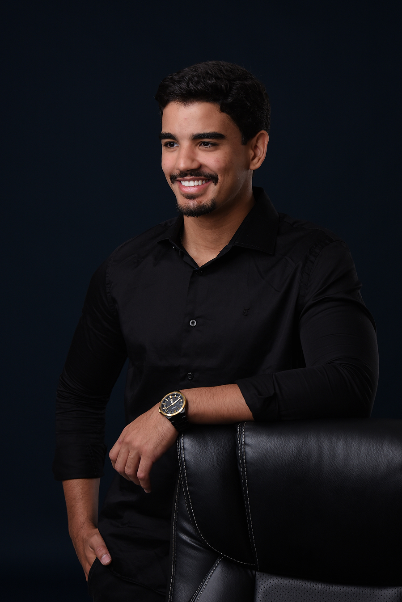
Sou cirurgião-dentista apaixonado por devolver às pessoas a vontade de sorrir. Acredito que um bom tratamento une técnica, tecnologia e, principalmente, um olhar atento para quem está na cadeira.
Meu compromisso é oferecer a cada paciente um plano individual, transparente e confortável, do primeiro contato ao resultado final.
CRO-MG 77961
Quero ser atendido pelo Dr. ChristianRole para conhecer cada tratamento.
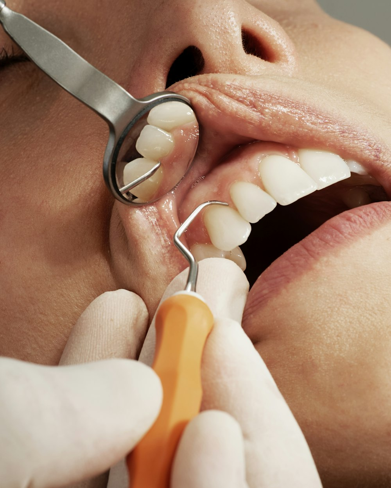
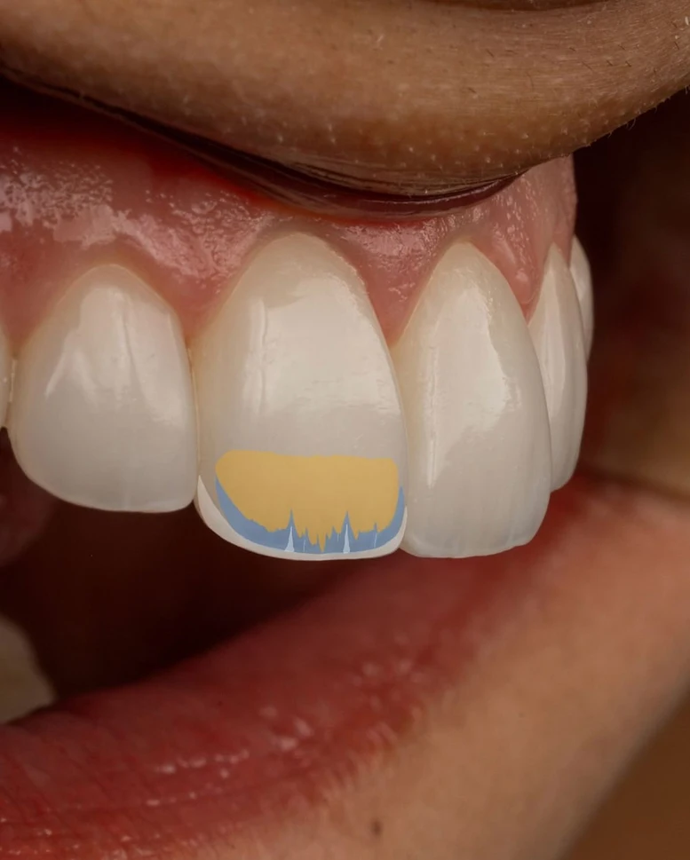

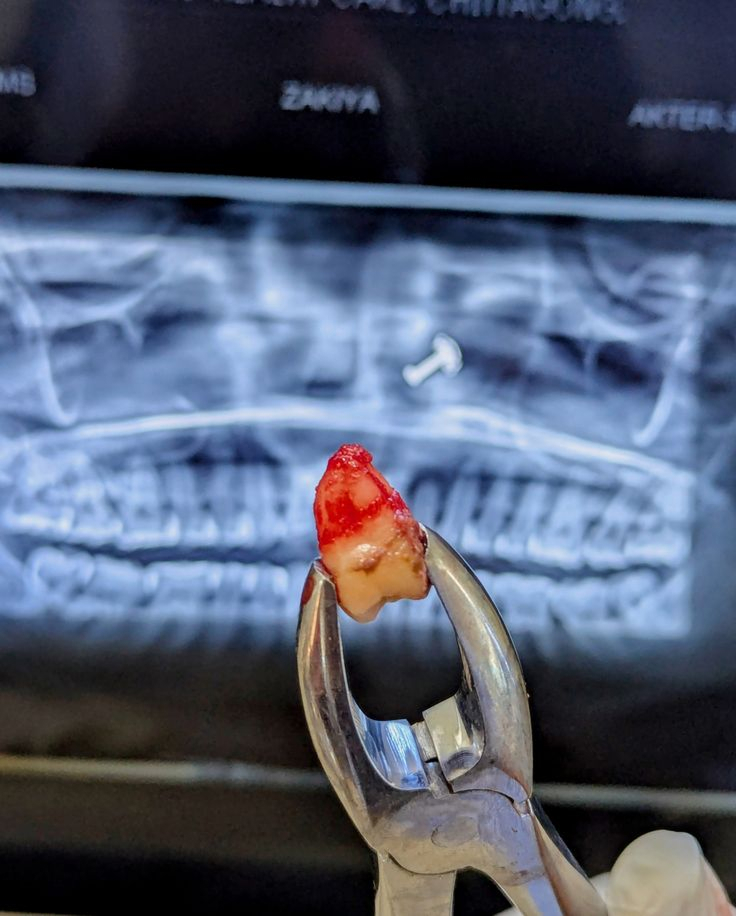
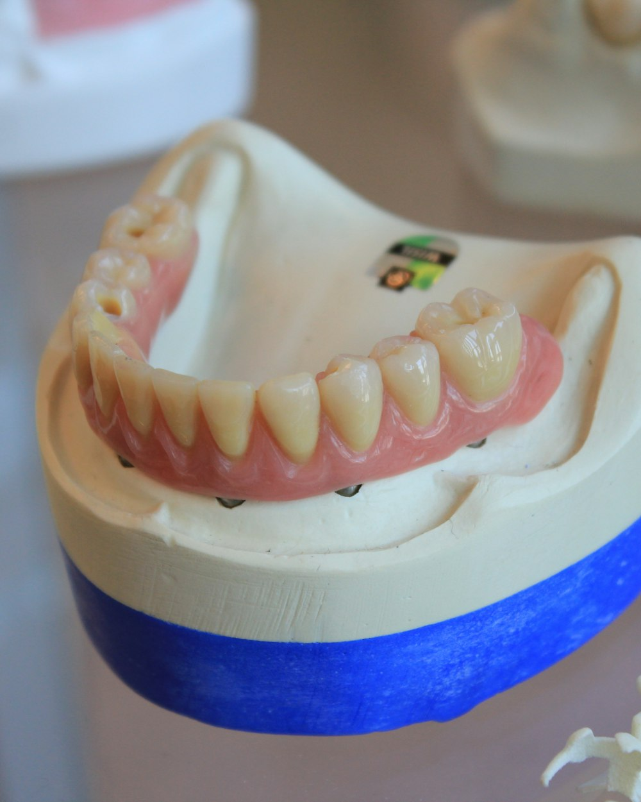
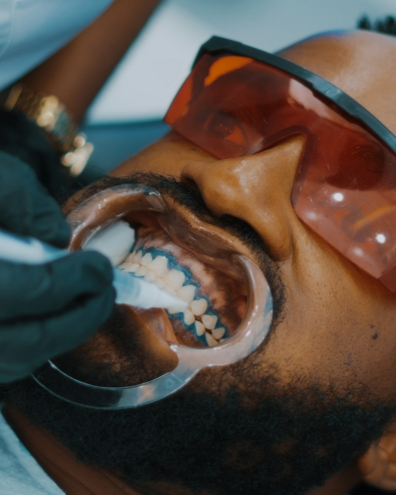
Remoção de placa bacteriana e tártaro para gengivas saudáveis, hálito fresco e prevenção de problemas maiores.
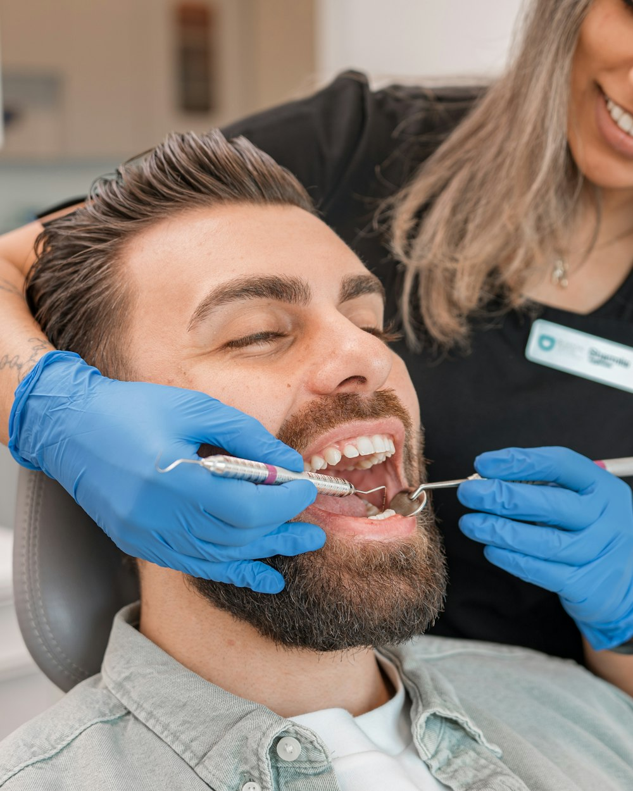
02 · DentísticaRecupero dentes com cárie, fraturas ou desgastes usando resina na cor do dente, devolvendo forma, função e estética.
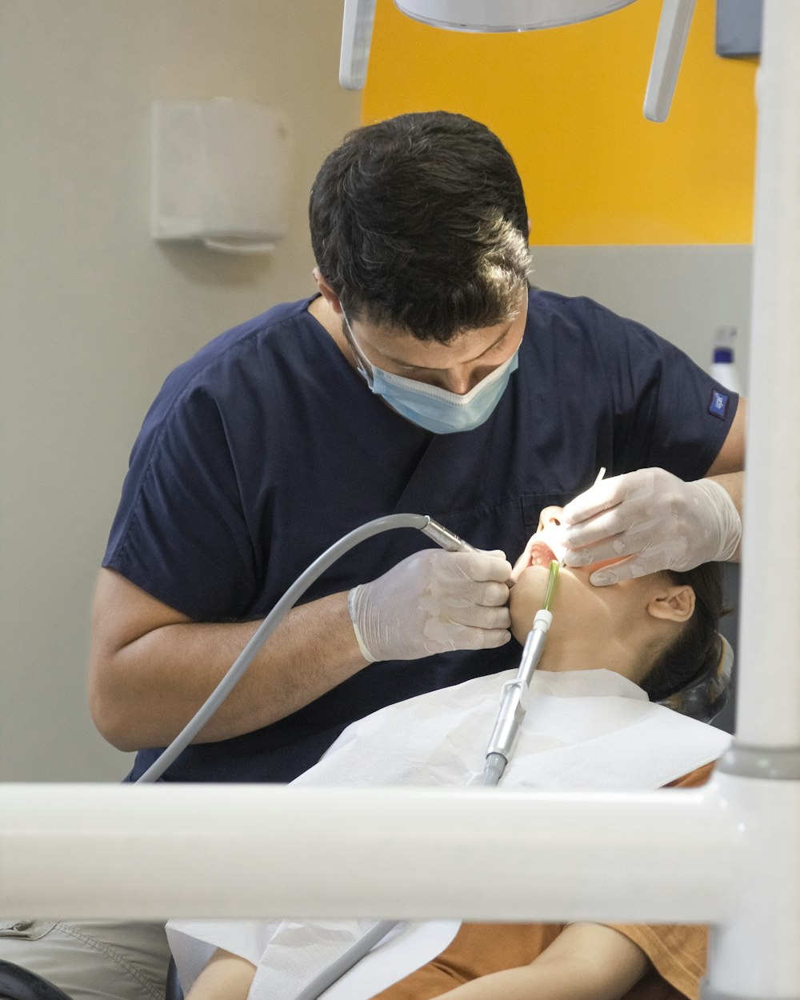
03 · EndodontiaTrata a dor e a infecção na parte interna do dente, para preservar o seu dente natural.
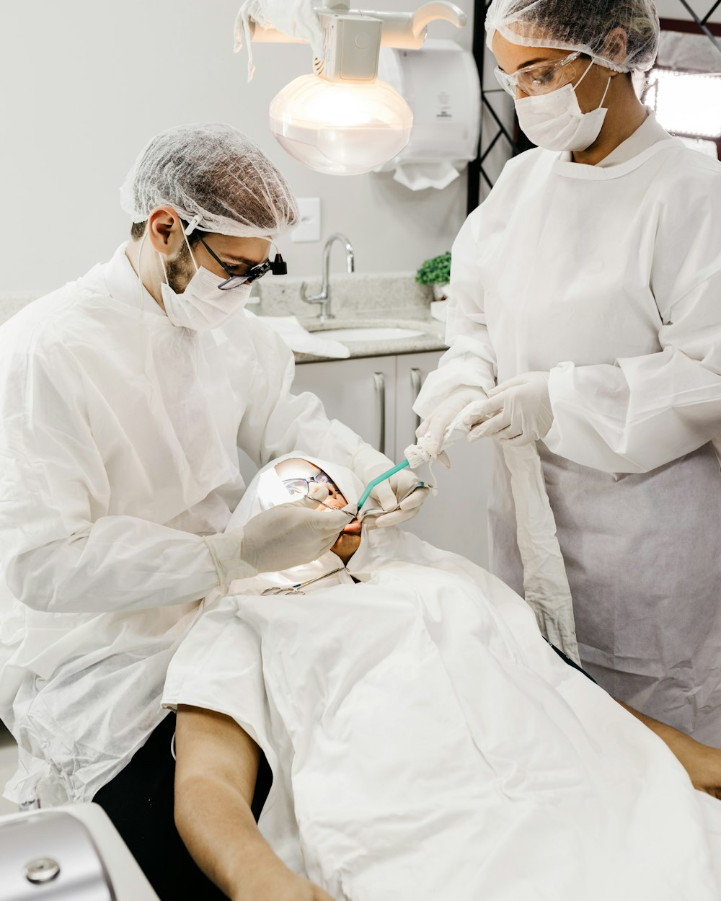
04 · Cirurgia oral menorExtrações, dentes do siso e pequenos procedimentos com planejamento, segurança e acompanhamento no pós-operatório.
Reposição de dentes perdidos para você voltar a mastigar, falar e sorrir com confiança.
Dentes mais brancos com técnica segura e acompanhamento de perto, para um resultado natural.
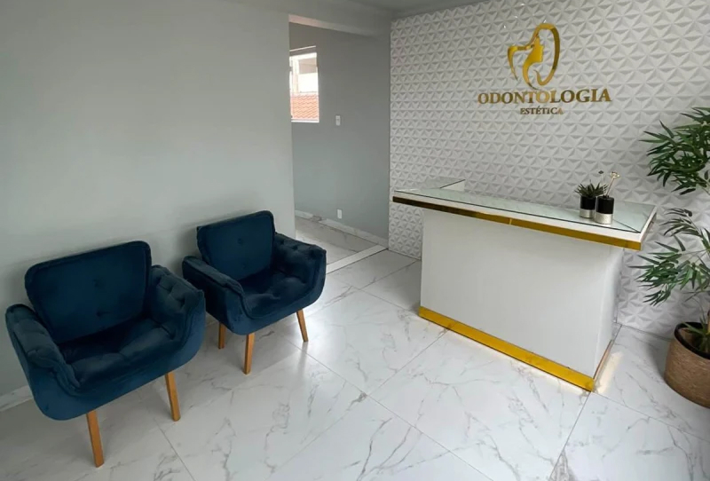
Reuni as perguntas que mais recebo no consultório. Se a sua não estiver aqui, é só me chamar.
Falar com o consultórioNa avaliação eu escuto suas queixas e expectativas, faço um exame completo e, se necessário, peço exames complementares. Ao final você recebe um plano de tratamento claro, com etapas e prazos.
O atendimento é particular, mas fornecemos recibo e documentação para reembolso junto ao seu plano odontológico.
Pix, cartão de débito e parcelamento no cartão de crédito. Condições especiais para tratamentos completos.
Em geral, a recomendação é a cada seis meses, mas a frequência ideal depende da saúde da sua gengiva e é definida na avaliação.
O procedimento é feito com anestesia, para que você fique confortável. O canal serve justamente para eliminar a dor e a infecção e preservar o seu dente.
Você recebe todas as orientações por escrito e acompanhamento no pós-operatório. Seguir os cuidados indicados é o que garante uma recuperação tranquila.
Com bons hábitos e manutenção, o resultado pode durar bastante tempo. Indico os cuidados ideais para o seu caso.
Preencha os dados e você será direcionado ao WhatsApp do consultório com a mensagem pronta.